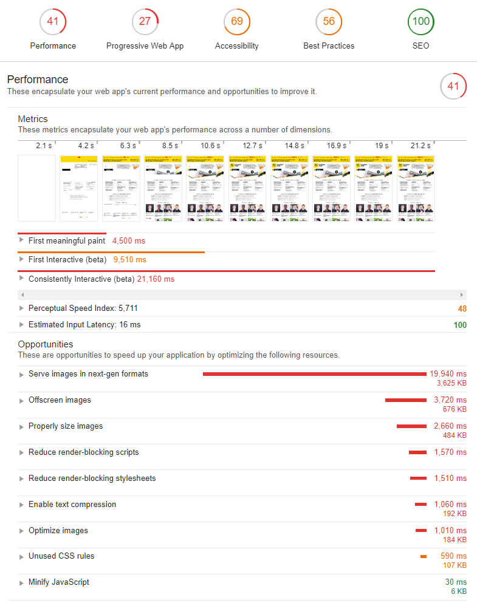
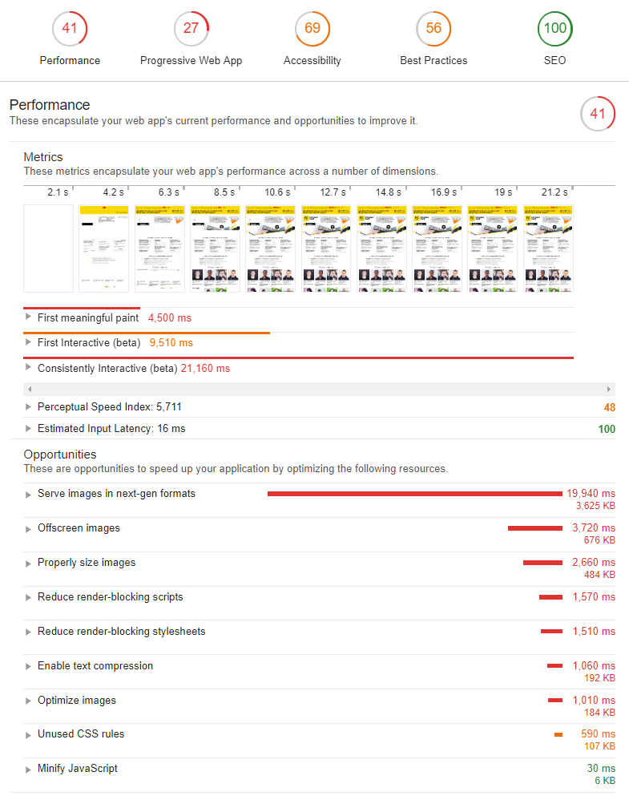

Никита Дубко
- Software Engineer в iTechArt Group;
- адепт философии Pure CSS Images;
- соорганизатор митапов MinskCSS и MinskJS.

Никита Дубко, iTechArt Group
Никита Дубко, iTechArt Group
53% вероятность, что пользователь покинет страницу, если мобильный сайт загружается дольше, чем
3 секунды
Среднее время загрузки мобильной страницы на соединении
3G:
19 секунд

 

Joint Photographic Experts Group
jpeg.org

Размер: 225x300
Размер: 225x300
Размер: 225x300

npm install --save-dev gulp-imagemin
const gulp = require('gulp');const imagemin = require('gulp-imagemin');gulp.task('images', () =>gulp.src('images/*.jpg').pipe(imagemin([imagemin.jpegtran({ progressive: true }),])).pipe(gulp.dest('dist')));
npm install --save-dev imagemin-guetzli
const gulp = require('gulp');const imagemin = require('gulp-imagemin');const imageminGuetzli = require('imagemin-guetzli');gulp.task('guetzli', () =>gulp.src('src/*.jpg').pipe(imagemin([ imageminGuetzli({ quality: 85 }) ])).pipe(gulp.dest('dist')));
npm install --save-dev imagemin-mozjpeg
const gulp = require('gulp');
const imagemin = require('gulp-imagemin');
const imageminMozjpeg = require('imagemin-mozjpeg');gulp.task('mozjpeg', () =>gulp.src('src/*.jpg').pipe(imagemin([imageminMozjpeg({progressive: true,quality: 85,sample: ['2x1']})])).pipe(gulp.dest('dist')));
| Guetzli | MozJPEG |
|---|---|
|
|
Размер: 1200x925
q=100, 759 КБ
q=80, 383 КБ
q=80 (blur), 206 КБ
gulp.task('jpegcombo', () =>gulp.src('src/*.jpg').pipe(imagemin([ imageminGuetzli({ quality: 95 }) ])).pipe(imagemin([imageminMozjpeg({progressive: true,quality: 85,})])).pipe(gulp.dest('dist')));
const shell = require('gulp-shell');
gulp.task('exif', () =>
gulp.src('dist/*.jpg', { read: false })
.pipe(shell([
'exiftool -P -overwrite_original -all= <%=file.path%>'
]))
);brew install ImageMagick
...
convert image.jpg -quality 0 image.jp2
convert image.jpg image.jxr
*.jp2 — JPEG2000
*.jxr — JPEG-XR
Graphics Interchange Format

ffmpeg \
-i animated.gif \
-movflags faststart \
-pix_fmt yuv420p \
-vf “scale=trunc(iw/2)*2:trunc(ih/2)*2” \
video.mp4
ffmpeg -i input.gif -c vp9 -b:v 0 -crf 41 output.webm
<img src="kitty.gif" width="400" height="300">⬇️
<video width="400" height="300"
autoplay loop muted playsinline>
<source src="kitty.webm" type="video/webm">
<source src="kitty.mp4" type="video/mp4">
<img src="kitty.gif" width="400" height="300">
</video>gifsicle -O3 --lossy=80 -o output.gif input.gif
kohler/gifsicle — lossless
kornelski/giflossy — lossy
npm install --save-dev imagemin-gifsicle
const gulp = require('gulp');const imagemin = require('gulp-imagemin');const imageminGifsicle = require('imagemin-gifsicle');gulp.task('gifsicle', () =>gulp.src('src/*.gif').pipe(imagemin([ imageminGifsicle() ])).pipe(gulp.dest('dist')));
Portable Network Graphics
«PNG is Not GIF»

npm install --save-dev imagemin-pngquant
const gulp = require('gulp');const imagemin = require('gulp-imagemin');const imageminPngquant = require('imagemin-pngquant');gulp.task('pngquant', () =>gulp.src('src/*.png').pipe(imagemin([ imageminPngquant({ quality: 85 }) ])).pipe(gulp.dest('dist')));
npm install --save-dev imagemin-webp
const imageminWebp = require('imagemin-webp');gulp.task('webp', () =>gulp.src('src/*.{jpg,png}').pipe(imagemin([imageminWebp({quality: 85,preset: 'photo'})])).pipe(gulp.dest('dist')));
gif2webp -mixed kitty.gif -o kitty.webp
Scalable Vector Graphics
w3.org/Graphics/SVG
<svg id="circle" height="200" xmlns="http://www.w3.org/2000/svg">
<circle id="greencircle" cx="50" cy="50" r="50" fill="green" />
</svg>npm install --save-dev imagemin-svgo
const imageminSvgo = require('imagemin-svgo');gulp.task('svgo', () =>gulp.src('src/*.svg').pipe(imagemin([imageminSvgo({convertColors: true,})])).pipe(gulp.dest('dist')));
<svg xmlns="http://www.w3.org/2000/svg"xmlns:xlink="http://www.w3.org/1999/xlink"><symbol viewBox="0 0 100 100" id="greencircle"><circle cx="50" cy="50" r="50" fill="green" /></symbol><symbol viewBox="0 0 100 100" id="redsquare"><rect x="0" y="0" width="100" height="100" fill="red" /></symbol></svg>
<html><body><svg class="icon icon--circle" width="100"><use xlink:href="sprite.svg#greencircle" /></svg><svg class="icon icon--square" width="100"><use xlink:href="sprite.svg#redsquare" /></svg></body></html>
npm install --save-dev gulp-svg-sprite
const svgSprite = require('gulp-svg-sprite');
gulp.task('svgSprite', () =>
gulp.src('src/icons/*.svg')
.pipe(svgSprite({
mode: {
symbol: { sprite: "../sprite.svg" }
}
}))
.pipe(gulp.dest('dist'))
);
<table> +
background-imagex3
backgroundborder-radiusbox-shadowtransformopacityfilterJPG, 25 КБ
GET /some.jpg HTTP/1.1Host: ...Connection: keep-aliveUser-Agent: ...Accept: image/webp,image/apng,image/*,*/*;q=0.8Accept-Encoding: gzip, deflate, brAccept-Language: en-US,en;q=0.9,ru-RU;q=0.8,ru;q=0.7
<IfModule mod_rewrite.c>
RewriteEngine On
RewriteCond %{HTTP_ACCEPT} image/webp
RewriteCond %{DOCUMENT_ROOT}/$1.webp -f
RewriteRule (.+)\.(jpe?g|png)$ $1.webp [T=image/webp,E=accept:1]
</IfModule>
<IfModule mod_headers.c>
Header append Vary Accept env=REDIRECT_accept
</IfModule>
AddType image/webp .webpETag: W/"3b952-1635db68e52"Cache-Control: public, max-age=31536000
if ('serviceWorker' in navigator) {
const sw = navigator.serviceWorker;
sw.register('sw.js')
.then(() => sw.ready.then((worker) => {
worker.sync.register({
minRequiredNetwork: 'network-online'
});
}));
}importScripts('https://storage.googleapis.com/.../workbox-sw.js');
workbox.routing.registerRoute(
/\.(?:png|gif|jpg|jpeg|svg)$/,
workbox.strategies.cacheFirst({
cacheName: 'images',
plugins: [
new workbox.expiration.Plugin({
maxEntries: 60,
maxAgeSeconds: 30 * 24 * 60 * 60, // 30 Days
}),
],
}),
);let isSlow = true;
const connection = navigator.connection;
if (connection) {
// 'slow-2g', '2g', '3g' или '4g'
if (connection.effectiveType !== 'slow-2g') {
isSlow = false;
}
}Не заставляйте браузер обрабатывать лишние пиксели!
<img src="rit.jpg" alt="Привет, РИТ!" width="20" height="18" />
<picture>
<source type="image/webp" media="(min-width: 1150px)"
srcset="rit-desktop@1x.webp 1x, rit-desktop@2x.webp 2x">
<source type="image/webp"
srcset="rit-mobile@1x.webp 1x, rit-mobile@2x.webp 2x">
<source media="(min-width: 1150px)"
srcset="rit-desktop@1x.jpg 1x, rit-desktop@2x.jpg 2x">
<img src="rit-mobile@1x.jpg" srcset="rit-mobile@2x.jpg 2x"
alt="Привет, РИТ!" width="20" height="18">
</picture><picture><source type="image/webp" media="(min-width: 1150px)" srcset="rit-desktop@1x.webp 1x, rit-desktop@2x.webp 2x"><source type="image/webp" srcset="rit-mobile@1x.webp 1x, rit-mobile@2x.webp 2x"><source media="(min-width: 1150px)" srcset="rit-desktop@1x.jpg 1x, rit-desktop@2x.jpg 2x"><img src="rit-mobile@1x.jpg" srcset="rit-mobile@2x.jpg 2x" alt="Привет, РИТ!" width="20" height="18"></picture>
<img srcset="rit-320w.jpg 320w,
rit-480w.jpg 480w,
rit-800w.jpg 800w"
sizes="(max-width: 320px) 280px,
(max-width: 480px) 440px,
800px"
src="rit-800w.jpg" alt="Привет, РИТ!">srcset — задаем каждому размеру свое изображение;sizes — вычисляем размер, который нужно применить;srcset самое подходящее по размеру изображение..rit {
background-image: url('img/rit.jpg');
}.rit {
background-image: url('img/rit-mobile.jpg');
}
@media (min-width: 1050px) {
.rit {
background-image: url('img/rit-desktop.jpg');
}
}

.rit {
background-image: url('img/rit@1x.jpg');
}
@media (-webkit-min-device-pixel-ratio: 2),
(min-resolution: 192dpi),
(min-resolution: 2dppx) {
.rit {
background-image: url('img/rit@2x.jpg');
}
}
.rit {
background-image: image-set(url('rit@1x.jpg') 1x,
url('rit@2x.jpg') 2x);
}npm install --global imaging-heap
imagingheap https://ritfest.ru/moscow/2018
<img style="top:0" src="/i/icons/s_backendconf.png" alt="Backend Conf"> ╔══════════╤══════════╤═══════╤════════════╤═══════╤════════════╗ ║ │ Image │ @1x │ @1x │ @2x │ @2x ║ ║ │ Width in │ Image │ Percentage │ Image │ Percentage ║ ║ Viewport │ Layout │ Width │ Match │ Width │ Match ║ ╟──────────┼──────────┼───────┼────────────┼───────┼────────────╢ ║ 320px │ 16px │ 16px │ 100.0% │ 16px │ 50.0% ║ ║ 480px │ 16px │ 16px │ 100.0% │ 16px │ 50.0% ║ ║ 640px │ 16px │ 16px │ 100.0% │ 16px │ 50.0% ║ ║ 800px │ 16px │ 16px │ 100.0% │ 16px │ 50.0% ║ ║ 960px │ 16px │ 16px │ 100.0% │ 16px │ 50.0% ║ ║ 1120px │ 16px │ 16px │ 100.0% │ 16px │ 50.0% ║ ║ 1280px │ 16px │ 16px │ 100.0% │ 16px │ 50.0% ║ ╚══════════╧══════════╧═══════╧════════════╧═══════╧════════════╝ Legend: @1x <100% >150% Above @1x <75% 75%–92%
<img src="placeholder.jpg"
data-src="image.jpg" />const observer = new IntersectionObserver(handler, {
rootMargin: '0px',
threshold: 0.1,
});
const images = document.querySelectorAll('img[data-src]');
images.forEach(img => {
observer.observe(img);
});function handler(entries, observer) {
entries.forEach(entry => {
if (entry.isIntersecting) {
loadImage(entry.target);
observer.unobserve(entry.target);
}
});
}function loadImage(image) {
const src = image.dataset.src;
fetchImage(src).then(() => { image.src = src; });
}function fetchImage(url) {
return new Promise((resolve, reject) => {
const image = new Image();
image.src = url;
image.onload = resolve;
image.onerror = reject;
});
}
npm install -g sqip
sqip -o sqip.svg -n 8 image.jpg
<link rel="preload" as="image" href="important.png">alt;alt="";role="presentation";aria-hidden="true".var newImage = new Image();
newImage.src = "my-awesome-image.jpg";
if ("decode" in newImage) {
// Fancy decoding logic
newImage.decode().then(function() {
imageContainer.appendChild(newImage);
});
} else {
// Regular image load
imageContainer.appendChild(newImage);
}
mefody.github.io/talks/images-delivery/
@dark_mefody
n.a.dubko@gmail.com